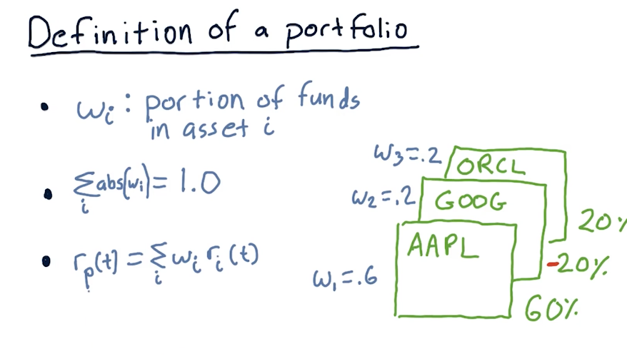
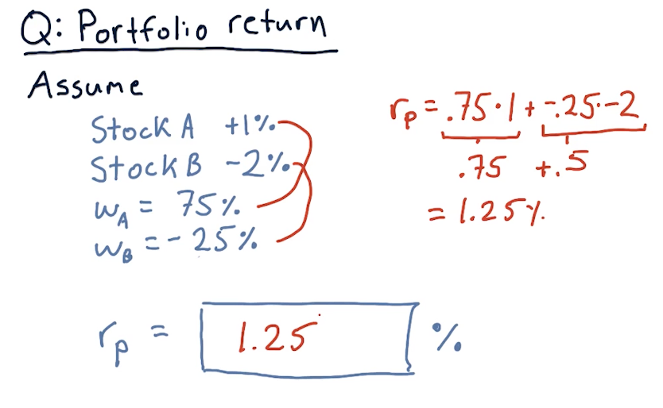
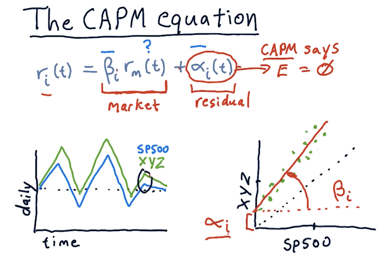
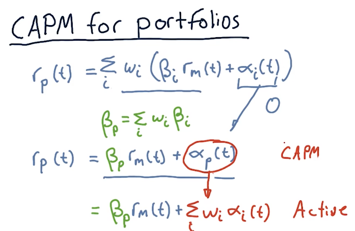

2-4: The capital assets pricing model (CAPM)
Definition of a portfolio
Before we begin talking about CAPM, the lecture first defines what constitutes a portfolio. This definition is important to effectively understand the CAPM equation.

Calculating portfolio return
Below is an exercise from the lecture on calculating portfolio returns:

Market portfolio
The lecture provides a breakdown on what comprises a market portfolio. In this case, the discussion revolves around the SP500, comprised of the top 500 stocks in the U.S. with the highest market caps. Each stock within the portfolio is cap weighted with the following equation:
weight = market_cap[i] / sum(market_caps)

The CAPM equation
The CAPM equation is a regression equation represented as follows:
returns[i] = (beta[i] * market_return) + alpha[i]
A definition for each variable in the CAPM equation is as follows:
returns[i]- returns for a particular stock on a particular daybeta[i]- the extent in which the market affects stockimarket_return- the market's return for a particular dayalpha[i]- residual returns unaffected by the market. The expected valueEof this variable is0.

CAPM vs active management
This section of the lecture defines portfolio management strategies, passive and active. Passive portfolio management involves buying an index and holding. Passive portfolio management also assumes that alpha is random, unpredictable, and will always be an expected value of 0. Active managers of portfolios believe they can predict alpha.

Calculating CAPM for portfolios
This section of the lectures provides us with equations to calculate the returns for an entire portfolio using CAPM. With CAPM and passive management , we can effectively assume that alpha is 0 and then we can calculate beta across all assets to arrive at a portfolio beta.
Active management strategies don't assume that alpha is 0 and will proceed to sum the alpha for all assets in the portfolio.
